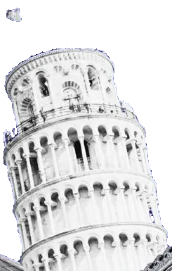
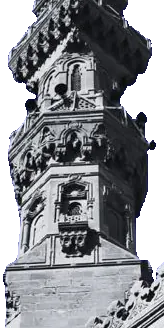
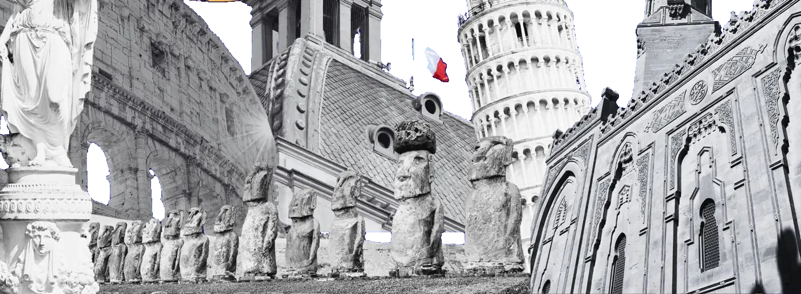
[Re]trace
Visites théâtralisées du patrimoine, sur mesure
1h30 où une commune se met à parler
Le projet
1h30 où une commune se met à parler.
Amélie Zaroukian écrit pour un territoire : pour ses pierres, ses ombres, ses figures oubliées. Puis elle confie ses voix à des comédiens amateurs volontaires, des habitants devenus passeurs de leur propre histoire, et les guide avec son complice Tom Poignon, alias Charles-Henry.
Une écriture originale pour chaque commune. Rien n'est recyclé : chaque pierre mérite ses mots à elle.
- FormeVisite théâtralisée du patrimoine
- Durée1h30
- ÉcritureOriginale, pour chaque commune
- JeuComédiens amateurs volontaires, habitants de la commune
Une création d'Amélie Zaroukian, avec Tom Poignon · Collectif 22h13min
Les éditions
- Poussan · 2026 · Fragments d'époquesJeudi 16 juillet (19h et 21h), jeudi 20 août (19h et 21h), dimanche 20 septembre (17h), dimanche 22 novembre. Un scénario qui mêle patrimoine, théâtre et science-fiction, avec les comédiens de la Compagnie du Strapontin.
- Cournonsec · 2026 · AutochtonesSamedi 19 septembre, 10h30.
- Poussan · 2025Jeudi 10 juillet (19h et 21h), jeudi 7 août (19h et 21h), dimanche 21 septembre (17h), avec les comédiens de la Compagnie du Strapontin.
- Cournonterral · 2024Journées européennes du patrimoine
- Cournonterral · 2023Journées européennes du patrimoine
- Mèze · 2022Première édition
Écriture et mise en rue : Amélie Zaroukian
« Fragments d'époques, un voyage théâtral à travers le temps »
Midi Libre, 12 juillet 2026 · Poussan
- « Réussite totale pour la première visite théâtralisée » · Poussan
- « Les visites théâtralisées ont séduit le public » · Poussan
- « Un spectacle qui va allier pédagogie et burlesque » · Poussan
Images
Captation : Corinne Gomez (Gom's)
Voir la vidéo sur YouTube ↗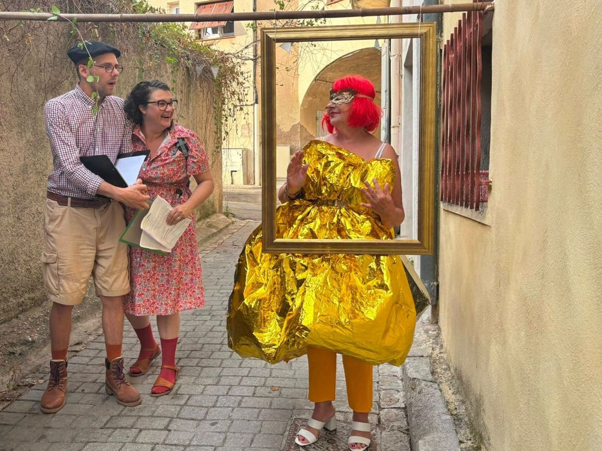
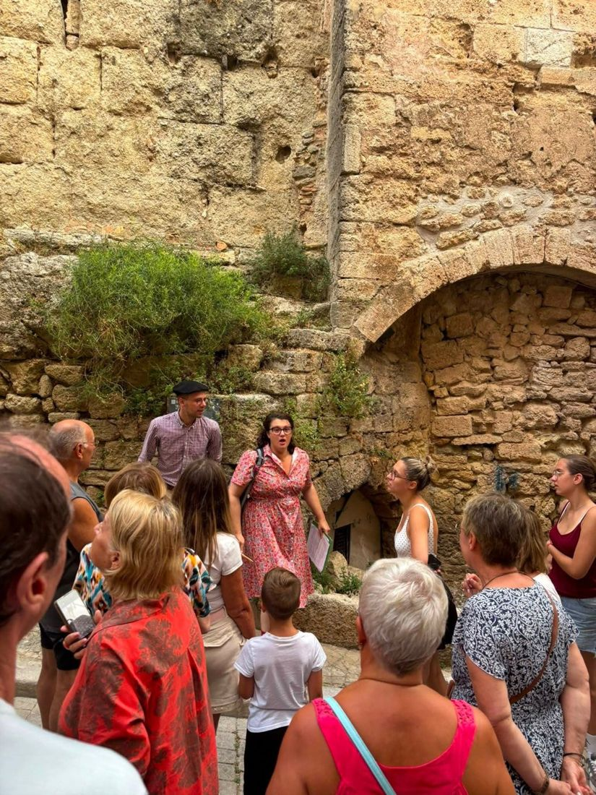
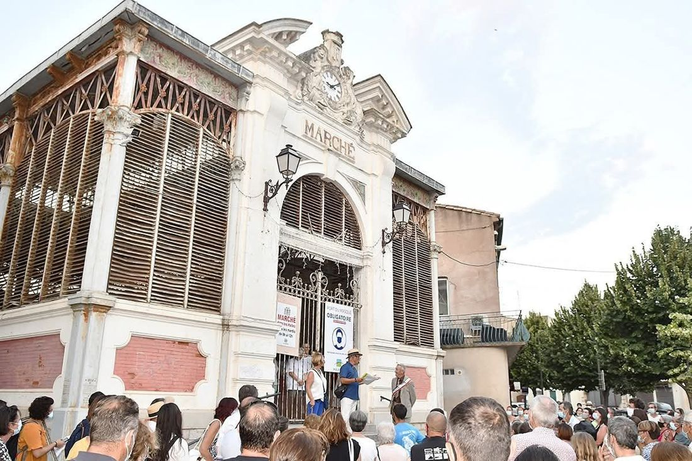
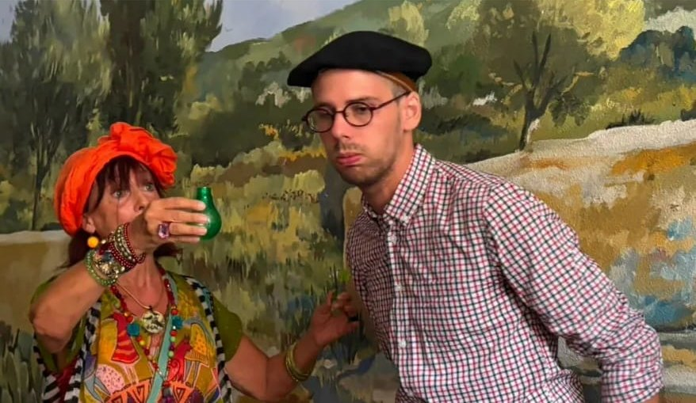
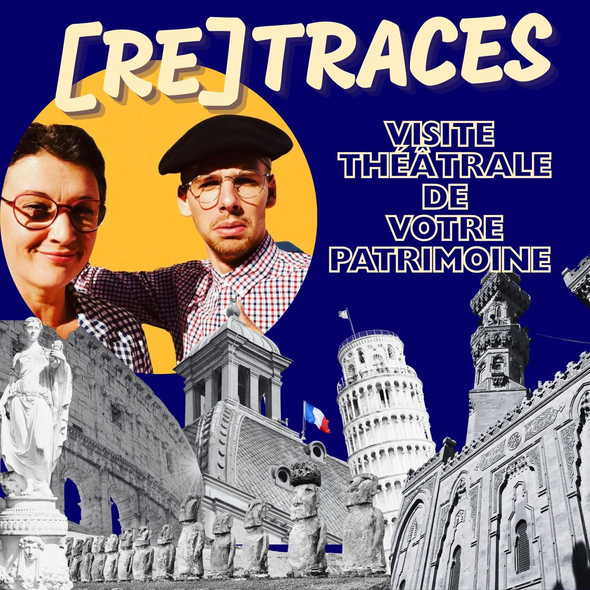
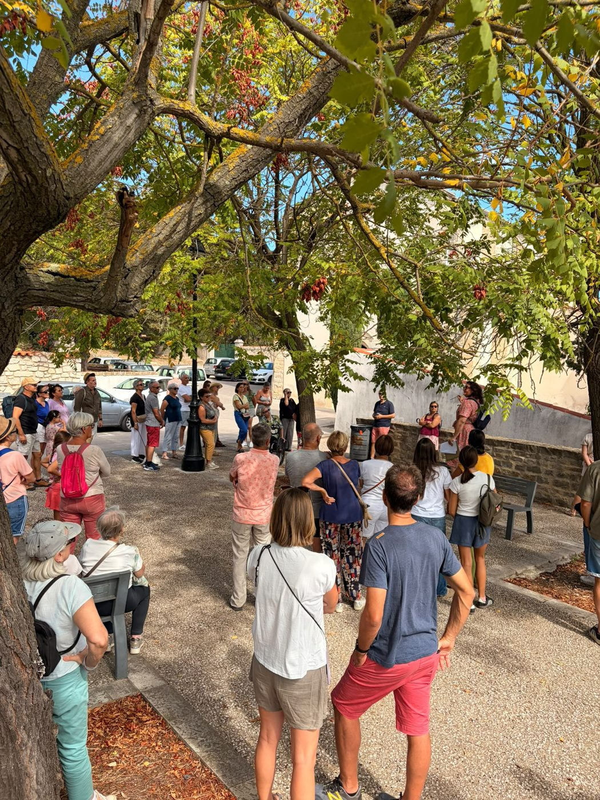
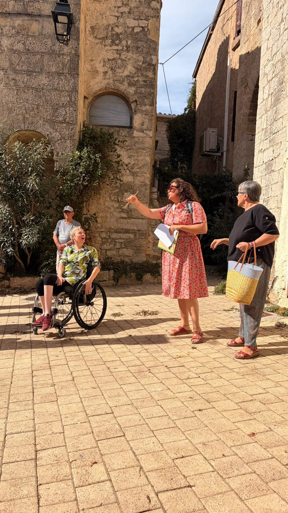
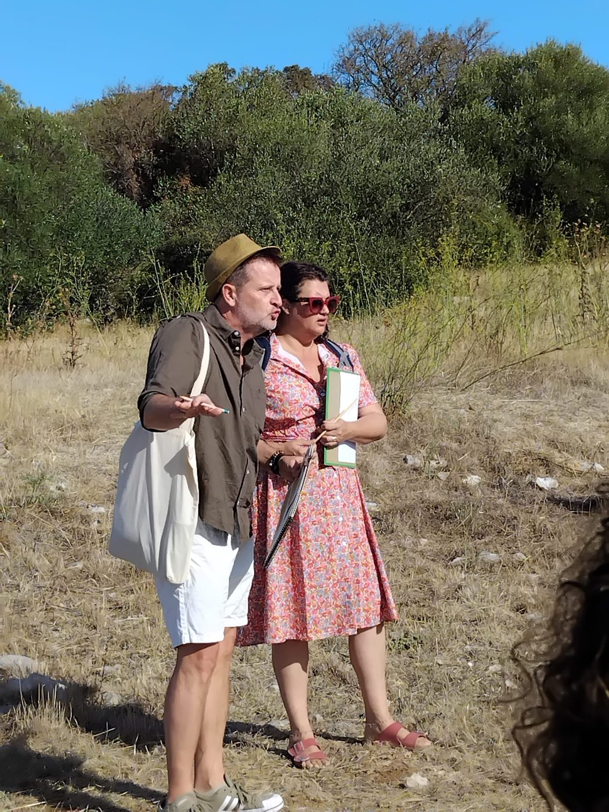
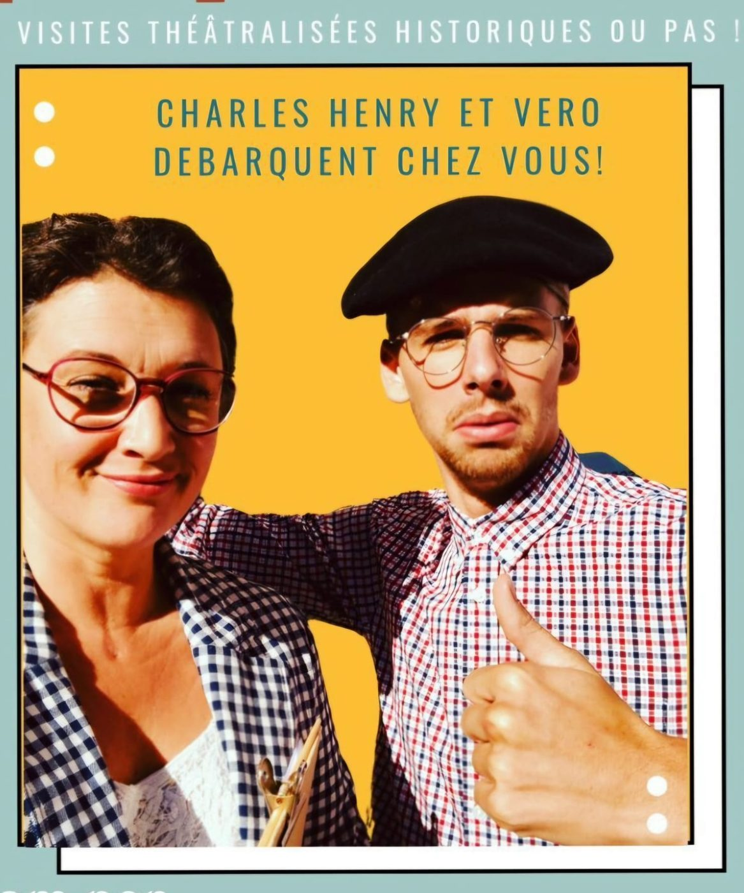
Faire venir [Re]trace
Quelle sera la prochaine ?
Une commune, une association, un lieu chargé d'histoire ? [Re]trace s'écrit pour chaque territoire. Écrivez au Collectif : 22h13min@gmail.com.
Collectif 22h13min · 22h13.fr